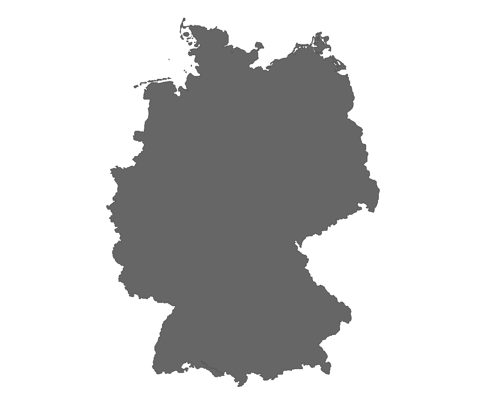
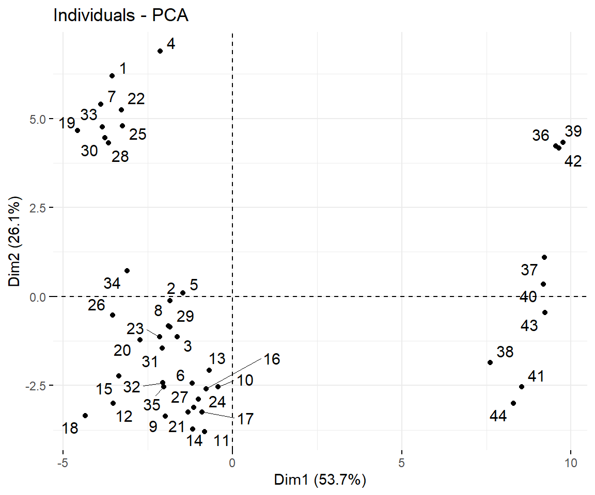

- 1 Einleitung
- 2 Erste Schritte mit R
- 3 Grundlagen
- 4 Wie lese ich Daten ein
- 5 Daten manipulieren
- 5.1 select() - Variablen auswählen (spaltenweise)
- 5.2 filter() - Filtern von Variablen (zeilenweise)
- 5.3 arrange() - Sortieren des Datensatzes
- 5.4 mutate() - Erstelle neue Variablen
- 5.5 summarize() - Zusammenfassung von Variablen
- 5.6 group_by - Gruppiere Variablen
- 5.7 across() - Anwenden von Funktionen auf Spalten
- 5.8 joins
- 5.9 pivot_longer() - Long data format
- 5.10 pivot_wider() - wider data format
- 6 Explorative-Datenanalyse
- 7 Datenvisualisierung
- 8 Karten erstellen in R üåç
- 9 Statistische Auswertungen
- 10 Datenmanagement
- 11 Reporting in Rmarkdown
- 12 Github
- 13 Bookdown
- 14 Blogdown
- 15 Shiny
- 16 Diverses
8.3 Übungen
8.3.1 Erstelle eine Karte der Bundesrepublik
Als erstes Laden wir unsere Geodaten der Verwaltungsgebiete im Maßstab 1:2.500.000 herunter und extrahieren sie in unseren Projektordner. “Der Datensatz umfasst sämtliche Verwaltungseinheiten der hierarchischen Verwaltungsebenen vom Staat bis zu den Kreisen mit ihren Grenzen, dem Regionalschlüssel und dem Namen der Verwaltungseinheit.”
# Als erstes müssen die wichtigen packages geladen werden
library(sf)
library(tidyverse)
# Laden der Geodaten und als Objekt speichern mit `st_read`
map_state <- sf::st_read("data/vg2500_01-01.utm32s.shape/vg2500/vg2500_sta.shp")
## Reading layer `vg2500_sta' from data source
## `C:\Dorau\Arbeit\00. R\Book\doku\data\vg2500_01-01.utm32s.shape\vg2500\vg2500_sta.shp'
## using driver `ESRI Shapefile'
## Simple feature collection with 3 features and 4 fields
## Geometry type: MULTIPOLYGON
## Dimension: XY
## Bounding box: xmin: 280353.1 ymin: 5235878 xmax: 921021.2 ymax: 6104656
## Projected CRS: ETRS89 / UTM zone 32N
# Ein Riesenvorteil des sf packages ist die Kompatibilität mit dem tidyverse. Daher hat man alle Funktionalitäten im Zusammenhang mit ggplot und auch m Daten zu transformieren oder zu filtern
map_state %>%
ggplot() +
geom_sf()
Das sieht aber merkwürdig aus?! Zeile 1 in eurem erstellten Objekt steht für das Seeeinzugsgebiet Deutschlands. Wir können die erste Zeile mit slice und dem pipe operator %>% einfach entfernen:
p1 <- map_state %>%
slice(2:3) %>% # Zeile 1 codiert das Seeeinzugsgebiet. Mit `slice` entfernt man die erste Zeile in dem man bestätigt Zeile 2 bis 3 zu behalten
ggplot() +
geom_sf()
p1
Sehr sch√∂n üòÑ Sylt ist wieder zu erkennen! Falls die Farbe nicht gef√§llt kann man das theme einfach anpassen.
map_state %>%
slice(2:3) %>%
ggplot() +
geom_sf(fill = "grey40") +
theme_void()
Falls uns aber nicht die Bundesgrenzen interessieren sondern die Landes- oder sogar Kreisgrenzen, so können wir diese aus unseren Daten ebenfalls einlesen. Die Codierung der Datei lautet:
- Land (
lan) - Regierungsbezirk (
rbz) - Kreis (
krs)
# Einlesen der Daten
map_federal <- sf::st_read("data/vg2500_01-01.utm32s.shape/vg2500/vg2500_lan.shp")
## Reading layer `vg2500_lan' from data source
## `C:\Dorau\Arbeit\00. R\Book\doku\data\vg2500_01-01.utm32s.shape\vg2500\vg2500_lan.shp'
## using driver `ESRI Shapefile'
## Simple feature collection with 16 features and 4 fields
## Geometry type: MULTIPOLYGON
## Dimension: XY
## Bounding box: xmin: 280353.1 ymin: 5235878 xmax: 921021.2 ymax: 6101335
## Projected CRS: ETRS89 / UTM zone 32N
# Darstellen der Landesgrenzen
p2 <- map_federal %>%
ggplot() +
geom_sf()
p2
# Einlesen der Daten
map_district <- sf::st_read("data/vg2500_01-01.utm32s.shape/vg2500/vg2500_krs.shp")
## Reading layer `vg2500_krs' from data source
## `C:\Dorau\Arbeit\00. R\Book\doku\data\vg2500_01-01.utm32s.shape\vg2500\vg2500_krs.shp'
## using driver `ESRI Shapefile'
## Simple feature collection with 401 features and 4 fields
## Geometry type: MULTIPOLYGON
## Dimension: XY
## Bounding box: xmin: 280353.1 ymin: 5235878 xmax: 921021.2 ymax: 6101335
## Projected CRS: ETRS89 / UTM zone 32N
# Darstellen der Landesgrenzen
p3 <- map_district %>%
ggplot() +
geom_sf()
p3
Es ist Zeit zu feiern! Wir haben unsere erste vektorbasierte Karte mit R erstellt üëç
Man kann weiterhin einzelne Verwaltungsbezirke auswählen und darstellen. Die Objektstruktur eines sf Objektes ermöglicht dies.
# Stelle die ersten 5 Zeilen des Objektes map_district dar
head(map_district, 5)
## Simple feature collection with 5 features and 4 fields
## Geometry type: MULTIPOLYGON
## Dimension: XY
## Bounding box: xmin: 478836.8 ymin: 5958992 xmax: 629246.8 ymax: 6075267
## Projected CRS: ETRS89 / UTM zone 32N
## ADE ARS ARS_0 GEN geometry
## 1 4 01001 010010000000 Flensburg MULTIPOLYGON (((531471 6075...
## 2 4 01002 010020000000 Kiel MULTIPOLYGON (((577310.3 60...
## 3 4 01003 010030000000 Lübeck MULTIPOLYGON (((624204.4 59...
## 4 4 01004 010040000000 Neumünster MULTIPOLYGON (((567602.5 59...
## 5 4 01051 010510000000 Dithmarschen MULTIPOLYGON (((479551.7 59...In der Spalte GEN sind die Namen der Bezirke codiert wohingegen die Geometrien (Formen) in der Spalte daneben gelistet sind.
map_district %>%
filter(GEN == "Berlin") %>% # mit filter() durchsuchen wir die Spalte GEN nach dem Wort Berlin
ggplot() +
labs(
title = "Berlin"
) +
geom_sf()
8.3.2 Erstelle eine Weltkarte
Shape Daten der Ländergrenzen sind im package rnaturalearth enthalten.
# Laden der Daten und speichern als Objekt map_world
map_world <- rnaturalearth::ne_countries(scale = "medium", returnclass = "sf")
map_world %>%
ggplot() +
geom_sf(fill = "white", color = "black") +
labs(
title = "World map",
subtitle = paste0("(", length(unique(map_world$admin)), " countries)"), # Die Funktion length() zählt die Länge des Vektors und damit die Anzahl der Länder
x = "Longitude",
y = "Latitude"
)